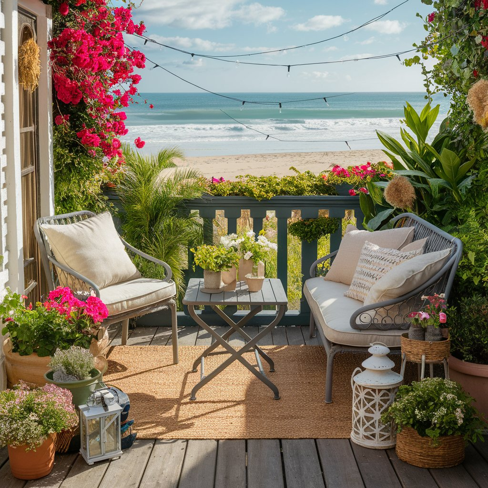

Vivre en appartement ne signifie pas renoncer au plaisir du jardinage. Avec un peu d'ingéniosité et les bonnes techniques, votre balcon peut se transformer en un véritable petit paradis vert, productif et esthétique. Que vous disposiez d'un grand balcon ensoleillé ou d'un petit rebord de fenêtre ombragé, ce guide complet vous accompagne pas à pas pour créer le jardin urbain dont vous rêvez. Des herbes aromatiques fraîches pour la cuisine aux tomates juteuses de l'été, en passant par les cascades de fleurs colorées, tout est possible sur un balcon bien aménagé.
Évaluer votre balcon : les critères essentiels
Avant d'acheter le moindre pot ou la moindre graine, prenez le temps d'analyser votre espace. Cette étape fondamentale déterminera les plantes qui prospéreront chez vous et les aménagements les plus adaptés. Chaque balcon est unique, et ce qui fonctionne chez votre voisin ne marchera pas forcément chez vous.
L'exposition au soleil
L'ensoleillement est le facteur le plus déterminant pour le choix de vos plantes. Observez votre balcon sur plusieurs jours et notez précisément les heures d'ensoleillement direct.
- Balcon plein sud (6 heures ou plus de soleil direct) : idéal pour les tomates, poivrons, fraises, herbes méditerranéennes (romarin, thym, lavande), géraniums et pétunias. Attention au dessèchement rapide des pots en été.
- Balcon est ou ouest (4 à 6 heures de soleil) : parfait pour les salades, les radis, les épinards, les fraises, le persil, la ciboulette, les impatiens et les bégonias. Un bon compromis entre lumière et fraîcheur.
- Balcon nord (moins de 4 heures de soleil direct) : convient aux plantes d'ombre comme la menthe, le persil, le cerfeuil, les fougères, les hostas en pot et les lierres. La productivité sera moindre mais le jardinage reste tout à fait possible.
Le vent
Plus votre balcon est situé en hauteur, plus il sera exposé au vent. Le vent dessèche les plantes, renverse les pots légers et peut endommager les tiges fragiles. En étage élevé, privilégiez des contenants lourds et stables, des plantes résistantes au vent (graminées, lavande, romarin) et installez des brise-vent naturels ou artificiels. Un treillis recouvert de plantes grimpantes crée un écran efficace tout en ajoutant du charme. Les claustras en bois ou en bambou réduisent la force du vent de 50 à 70 pour cent sans créer de turbulences.
La capacité de charge
C'est un point crucial souvent négligé. Un balcon standard supporte généralement entre 250 et 350 kilogrammes par mètre carré, mais cette capacité varie selon l'âge et le type de construction. Un pot de 40 centimètres rempli de terreau humide pèse facilement 15 à 25 kilogrammes. Multipliez par une dizaine de pots, ajoutez le poids des jardinières, du mobilier et des personnes, et vous approchez vite des limites. En cas de doute, consultez votre syndic ou un professionnel du bâtiment. Répartissez toujours les charges lourdes le long des murs porteurs plutôt qu'au centre du balcon ou près de la rambarde.
Choisir les bons contenants
Le choix des contenants influence directement la santé de vos plantes. La taille, le matériau et le drainage sont les trois critères à considérer en priorité.

Les matériaux
- Terre cuite : esthétique et naturelle, elle permet une bonne aération des racines grâce à sa porosité. En revanche, elle est lourde, fragile au gel et sèche plus vite. Réservez-la aux plantes méditerranéennes qui apprécient un substrat bien drainé.
- Plastique : léger, économique et décliné dans tous les formats. Il retient mieux l'humidité que la terre cuite. Choisissez des modèles de bonne qualité avec protection UV pour éviter qu'ils ne se dégradent au soleil.
- Géotextile (sacs de culture) : excellente alternative moderne, très légère. Les sacs en géotextile offrent une aération optimale des racines (air pruning), un drainage parfait et se rangent à plat en hiver. Idéaux pour les tomates, les pommes de terre et les fraises.
- Bois : jardinières et bacs en bois apportent un charme naturel. Choisissez des essences résistantes (mélèze, douglas, châtaignier) ou du bois traité autoclave classe 4. Protégez l'intérieur avec une bâche perforée pour prolonger la durée de vie.
- Métal et zinc : esthétiques et durables, mais attention à la surchauffe en plein soleil. Isolez l'intérieur avec du polystyrène ou du liège pour protéger les racines de la chaleur excessive.
Les dimensions minimales
La taille du contenant doit être adaptée à la plante. Des contenants trop petits limitent le développement racinaire, réduisent les réserves en eau et en nutriments, et conduisent à des plantes chétives et peu productives. Pour les herbes aromatiques, comptez au minimum 15 centimètres de profondeur et de diamètre. Les salades s'épanouissent dans 20 centimètres de profondeur. Les tomates et les poivrons nécessitent des pots d'au moins 30 à 40 centimètres de profondeur et 30 litres de volume. Les fraisiers se contentent de 20 centimètres mais apprécient les jardinières longues où ils peuvent s'étaler.
Le drainage : une règle absolue
Chaque contenant doit impérativement posséder des trous de drainage au fond. L'eau stagnante est l'ennemi numéro un des plantes en pot : elle provoque le pourrissement des racines et la mort rapide de la plante. Placez une couche de 2 à 3 centimètres de billes d'argile ou de gravier au fond du pot avant d'ajouter le substrat. Si vous utilisez des soucoupes, videz-les systématiquement 30 minutes après l'arrosage.
Le substrat idéal pour la culture en contenants
N'utilisez jamais de la terre de jardin dans vos pots de balcon. Elle se compacte rapidement, draine mal et peut contenir des graines de mauvaises herbes, des parasites ou des maladies. Un bon substrat pour contenants doit être léger, aéré, rétenteur d'eau tout en drainant bien, et riche en nutriments.
La recette du substrat maison
Mélangez deux tiers de terreau universel de qualité avec un tiers de perlite ou de vermiculite pour améliorer le drainage et l'aération. Ajoutez une poignée de compost bien mûr par pot de 10 litres pour enrichir le mélange en matière organique. Pour les plantes méditerranéennes et les succulentes, augmentez la proportion de perlite à 50 pour cent et ajoutez du sable grossier. Pour les plantes gourmandes comme les tomates, enrichissez avec de la corne broyée (un engrais organique à libération lente) à raison d'une cuillère à soupe par pot de 20 litres.
Renouvelez intégralement le substrat chaque année au printemps. En cours de saison, complétez le niveau si le terreau s'est tassé. Un substrat de qualité est un investissement qui se traduit directement par des plantes plus saines et plus productives.
Les meilleures plantes pour le balcon
Certaines plantes sont naturellement plus adaptées à la culture en contenants que d'autres. Voici notre sélection des meilleures candidates pour un balcon productif et beau, classées par catégorie.
Les herbes aromatiques : le choix numéro un
Les aromatiques sont les plantes idéales pour débuter le jardinage sur balcon. Elles sont faciles à cultiver, peu exigeantes en espace, et rien ne vaut le plaisir de couper quelques feuilles fraîches pour agrémenter vos plats. Le basilic est le roi de l'été sur le balcon : plantez-le en avril-mai dans un pot d'au moins 20 centimètres, en plein soleil, et pincez régulièrement les sommités pour favoriser la ramification. Le persil (plat ou frisé) tolère la mi-ombre et produit pendant plusieurs mois. La ciboulette est quasi indestructible et repousse après chaque coupe. Le romarin et le thym, plantes méditerranéennes par excellence, adorent les balcons ensoleillés et supportent la sécheresse. La menthe, vigoureuse et envahissante, doit absolument rester dans son pot sous peine de coloniser tout votre espace.
Les tomates cerises
Les tomates cerises sont les stars incontestées du potager de balcon. Elles produisent abondamment dans un espace restreint et offrent une satisfaction incomparable. Choisissez des variétés compactes ou retombantes spécialement sélectionnées pour la culture en pot : Tiny Tim, Tumbling Tom, Balkonstar ou Lizzano. Plantez-les dans un pot d'au moins 30 litres, en plein soleil, avec un tuteur solide. Un pied de tomate cerise bien nourri peut produire plusieurs kilogrammes de fruits tout au long de l'été. Arrosez régulièrement (quotidiennement par temps chaud) et apportez de l'engrais pour tomates toutes les deux semaines dès l'apparition des premières fleurs.
Les fraisiers
Les fraisiers sont parfaitement adaptés au balcon, surtout dans des jardinières suspendues ou des pots à fraises empilables. Les variétés remontantes comme Charlotte, Mara des Bois ou Cijosée produisent des fruits de juin jusqu'aux premières gelées. Plantez-les dans un substrat riche et acide (ajoutez un peu de terre de bruyère), en veillant à ne pas enterrer le collet. Les stolons qui se forment peuvent être dirigés vers de nouveaux pots pour multiplier vos plants gratuitement.
Les poivrons et piments
Compacts et décoratifs, les poivrons et piments se plaisent dans des pots de 15 à 20 litres en plein soleil. Les variétés naines sont particulièrement adaptées : poivron Redskin, piment Apache, piment d'Espelette nain. Ils demandent de la chaleur (au moins 20 degrés), un arrosage régulier et un apport d'engrais riche en potassium pendant la fructification.
Les salades et les légumes-feuilles
Les salades sont rapides, faciles et idéales pour les balcons moins ensoleillés. Semez de la mesclun, de la roquette, des épinards ou de la mâche en jardinière de 20 centimètres de profondeur. Pratiquez le semis échelonné (toutes les 2 à 3 semaines) pour une récolte continue de mars à octobre. Les salades à couper sont particulièrement pratiques : cueillez les feuilles extérieures et le coeur continue de produire pendant des semaines.
Les fleurs comestibles et ornementales
Associez l'utile à l'agréable avec des fleurs qui embellissent votre balcon tout en attirant les pollinisateurs. Les capucines offrent des fleurs comestibles au goût poivré. Les soucis (calendula) ajoutent des touches de couleur orangée et repoussent certains parasites. Les géraniums, pétunias, surfinias et lobelias créent des cascades de couleur spectaculaires dans les jardinières suspendues. Pour l'automne et l'hiver, pensez aux pensées, aux chrysanthèmes nains et aux bruyères.

Le jardinage vertical : maximiser l'espace
Quand la surface au sol est limitée, il faut penser en hauteur. Le jardinage vertical est la solution miracle pour les petits balcons. Il permet de multiplier par deux ou trois la surface de culture disponible tout en créant un effet visuel saisissant.
Les solutions de jardinage vertical
- Les treillages et grillages : fixés au mur ou à la rambarde, ils accueillent les plantes grimpantes comme les haricots à rames, les pois, les concombres miniatures, le jasmin ou la clématite. Un treillage de 1 mètre sur 2 mètres peut supporter une dizaine de plants de haricots grimpants.
- Les étagères et escaliers à plantes : des étagères en bois ou en métal permettent de superposer les pots sur plusieurs niveaux. Placez les plantes qui aiment le soleil en haut et celles qui préfèrent l'ombre en bas.
- Les poches murales en feutre : ces systèmes de pochettes en géotextile se fixent au mur et accueillent des herbes aromatiques, des fraisiers ou de petites fleurs. Ils créent un véritable mur végétal vivant avec un investissement minimal.
- Les gouttières recyclées : fixez des demi-gouttières en PVC ou en zinc horizontalement sur le mur, à différentes hauteurs. Remplies de substrat, elles accueillent parfaitement les salades, les fraisiers et les radis.
- Les palettes recyclées : une palette dressée verticalement et garnie de géotextile devient un jardin vertical rustique et tendance. Parfait pour les aromatiques et les petites fleurs.
- Les tours de culture : des colonnes verticales avec des ouvertures latérales permettent de cultiver des fraisiers ou des salades sur toute leur hauteur. Certains modèles intègrent un système d'arrosage central par gravité.
"Le jardinage vertical n'est pas seulement une solution pratique pour les petits espaces. C'est aussi une approche esthétique qui transforme un mur nu en une tapisserie vivante de verdure et de couleurs. Un balcon vertical bien aménagé devient une véritable oeuvre d'art végétale."
L'arrosage : le défi majeur du balcon
L'arrosage est sans doute l'aspect le plus critique du jardinage sur balcon. Les plantes en contenants n'ont accès qu'à un volume de terre limité et se dessèchent beaucoup plus vite qu'en pleine terre. En été, par temps chaud et venteux, certains pots peuvent nécessiter un arrosage biquotidien. Voici les stratégies pour gérer efficacement l'eau sur votre balcon.
Les règles de base
Arrosez de préférence le matin, entre 6 et 9 heures. L'eau a le temps de pénétrer dans le substrat avant les fortes chaleurs, et les feuilles sèchent rapidement, ce qui limite les maladies fongiques. Arrosez abondamment jusqu'à ce que l'eau s'écoule par les trous de drainage, puis laissez le substrat sécher légèrement en surface entre deux arrosages. Enfoncez votre doigt de 2 centimètres dans le terreau : s'il est sec, arrosez ; s'il est encore humide, attendez. Utilisez de l'eau à température ambiante (laissez-la reposer quelques heures si elle sort froide du robinet).
Les systèmes d'arrosage automatique
Pour les balcons bien garnis ou si vous vous absentez régulièrement, un système d'arrosage automatique est un investissement judicieux. Les options les plus adaptées au balcon sont le goutte-à-goutte avec minuterie (le plus fiable et le plus économe en eau), les cônes d'arrosage en céramique à planter dans les pots (reliés à une bouteille d'eau retournée), les ollas (pots en terre cuite poreux enterrés dans le substrat qui libèrent l'eau progressivement) et les jardinières à réserve d'eau intégrée (dotées d'un double fond qui stocke l'eau et la distribue par capillarité). Un kit de goutte-à-goutte pour balcon, avec minuterie, tuyau et goutteurs, coûte entre 30 et 80 euros et s'installe en une heure. L'investissement est rapidement amorti en tranquillité d'esprit et en eau économisée.
Fertiliser en contenants : nourrir régulièrement
Les plantes en pots épuisent rapidement les nutriments du substrat. Contrairement à la pleine terre, où les racines peuvent explorer un large volume de sol, les plantes en contenants dépendent entièrement de ce que vous leur apportez. Un programme de fertilisation régulier est donc indispensable pour maintenir une croissance vigoureuse et une production abondante.
Les types d'engrais adaptés
Les engrais liquides organiques (purin d'ortie, émulsion de poisson, thé de compost) sont les plus pratiques pour le balcon. Diluez-les dans l'eau d'arrosage toutes les une à deux semaines pendant la période de croissance active (avril à septembre). Les engrais à libération lente sous forme de granulés ou de bâtonnets constituent un complément idéal : incorporez-les au substrat au moment du rempotage et ils nourrissent la plante progressivement pendant 2 à 3 mois. Pour les plantes gourmandes comme les tomates et les poivrons, alternez entre un engrais riche en azote pendant la croissance végétative et un engrais riche en potassium dès l'apparition des premières fleurs.
Attention au surdosage : en contenants, les racines sont plus sensibles aux brûlures. Respectez toujours les doses indiquées sur l'emballage, et en cas de doute, sous-dosez plutôt que surdosez. Arrosez toujours le substrat avant d'appliquer un engrais liquide pour protéger les racines.
Calendrier de plantation pour le balcon
Un bon timing est essentiel pour tirer le meilleur parti de votre saison de culture. Voici un calendrier mois par mois adapté aux conditions spécifiques du jardinage en contenants sur balcon.
Mars - Avril : Le démarrage
- Semez les tomates, poivrons et piments en intérieur (rebord de fenêtre ou mini-serre d'appartement)
- Plantez le persil, la ciboulette et la coriandre en pots
- Semez les radis et les salades en jardinières extérieures (protégez du gel avec un voile)
- Remplacez le substrat des pots de l'année précédente
- Plantez les fraisiers
Mai - Juin : L'installation
- Après les Saints de Glace (mi-mai), sortez les tomates, poivrons et piments sur le balcon
- Plantez le basilic, le romarin et le thym
- Semez les haricots nains et les courgettes en grands pots
- Installez les fleurs annuelles (géraniums, pétunias, surfinias)
- Mettez en place le système d'arrosage
- Commencez la fertilisation régulière
Juillet - Août : La pleine production
- Récoltez quotidiennement les tomates cerises, herbes et salades
- Arrosez matin et soir par fortes chaleurs
- Semez de nouvelles salades pour l'automne
- Taillez et pincez les aromatiques pour stimuler la repousse
- Surveillez les parasites (pucerons, acariens) favorisés par la chaleur
Septembre - Octobre : La transition
- Semez la mâche, les épinards et la roquette pour l'automne
- Plantez les bulbes de printemps (tulipes, crocus, narcisses) dans des pots
- Réduisez progressivement l'arrosage et la fertilisation
- Rentrez les plantes gélives (basilic, piments) ou récoltez-les entièrement
- Plantez les pensées et les bruyères pour un balcon fleuri en hiver
Novembre - Février : Le repos
- Protégez les pots des plantes vivaces avec du voile d'hivernage et du paillage
- Surélevez les pots pour éviter le contact avec le sol gelé
- Arrosez modérément les plantes persistantes par temps sec et hors gel
- Planifiez la saison prochaine et commandez graines et plants
- Nettoyez, réparez et stockez les contenants vides
Idées de design pour un beau balcon-jardin
Un balcon-jardin réussi est un espace qui allie productivité et esthétique. Voici quelques principes de design pour transformer votre balcon en un lieu où il fait bon vivre, et pas seulement en un espace utilitaire.

Jouer avec les hauteurs
Créez du volume en combinant des plantes basses en premier plan (thym rampant, fraisiers retombants), des plantes moyennes au centre (tomates, poivrons, géraniums) et des plantes hautes ou grimpantes en arrière-plan (haricots à rames, jasmin, clématite). Cette stratification reproduit l'effet d'un vrai jardin et donne une impression de profondeur même sur un petit balcon.
Harmoniser les contenants
Choisissez une palette de couleurs cohérente pour vos pots. Des contenants dépareillés donnent un aspect désordonné. Vous n'êtes pas obligé d'acheter tous les mêmes pots, mais gardez une unité de matériau (tout en terre cuite, tout en bois) ou de couleur (nuances de gris, tons chauds). Les cache-pots en osier ou en rotin ajoutent une touche chaleureuse et naturelle.
Créer des zones
Si votre balcon est assez grand, délimitez des espaces fonctionnels : un coin détente avec un petit fauteuil entouré de plantes parfumées, un coin potager productif regroupant les légumes et les aromatiques, et un coin fleuri pour le plaisir des yeux. Un petit tapis d'extérieur et quelques lanternes solaires complètent l'ambiance.
Les accessoires qui font la différence
Un petit arrosoir décoratif en cuivre, des étiquettes en ardoise pour identifier vos plantes, un carillon éolien, des guirlandes lumineuses solaires, un petit hôtel à insectes pour les pollinisateurs : ce sont les détails qui transforment un simple balcon planté en un véritable jardin d'agrément. Pensez aussi à installer un petit point d'eau (même une simple coupelle) pour attirer les oiseaux et les papillons.
"Un balcon-jardin n'est pas qu'un espace de production. C'est une extension de votre salon en plein air, un lieu de ressourcement au coeur de la ville. Soignez l'atmosphère autant que les plantes, et vous créerez un endroit où vous aurez envie de passer chaque moment libre."
Les erreurs les plus courantes à éviter
Pour terminer ce guide, voici les pièges dans lesquels tombent la plupart des jardiniers de balcon débutants, et comment les éviter.
- Surcharger le balcon : la tentation est grande de vouloir tout cultiver, mais trop de pots signifie trop de travail d'arrosage, pas assez de circulation d'air, et un balcon étouffant. Commencez petit, avec 5 à 10 pots, et ajoutez progressivement.
- Sous-estimer l'arrosage : un pot en plein soleil en été peut nécessiter deux arrosages par jour. Si vous n'êtes pas prêt pour cet engagement, réduisez le nombre de pots ou installez un système automatique.
- Négliger le drainage : des trous de drainage bouchés ou absents tuent plus de plantes que n'importe quel parasite. Vérifiez systématiquement chaque contenant.
- Utiliser de la terre de jardin : elle se compacte en pot, draine mal et peut introduire des maladies. Investissez dans un bon terreau.
- Oublier de fertiliser : les nutriments du terreau sont épuisés en 4 à 6 semaines. Sans apport régulier, vos plantes stagneront et produiront peu.
- Ignorer les microclimats : un coin du balcon peut recevoir du soleil brûlant le matin et de l'ombre l'après-midi, tandis que l'angle opposé est exposé différemment. Observez et adaptez.
En résumé
Le jardinage sur balcon est une aventure accessible à tous les citadins, quel que soit leur niveau d'expérience ou la taille de leur espace extérieur. Avec les bonnes connaissances sur l'exposition, les contenants, le substrat et l'arrosage, vous pouvez transformer quelques mètres carrés en un véritable jardin nourricier et esthétique. Commencez simplement avec quelques herbes aromatiques et des tomates cerises, prenez confiance, et élargissez progressivement votre palette végétale. Le balcon-jardin est bien plus qu'un passe-temps : c'est une reconnexion avec la nature, un geste écologique et une source de fierté quotidienne chaque fois que vous cueillez vos propres récoltes à deux pas de la cuisine.
N'attendez plus : le printemps est le moment idéal pour commencer. Votre balcon n'attend que vous pour devenir le plus beau jardin du quartier.